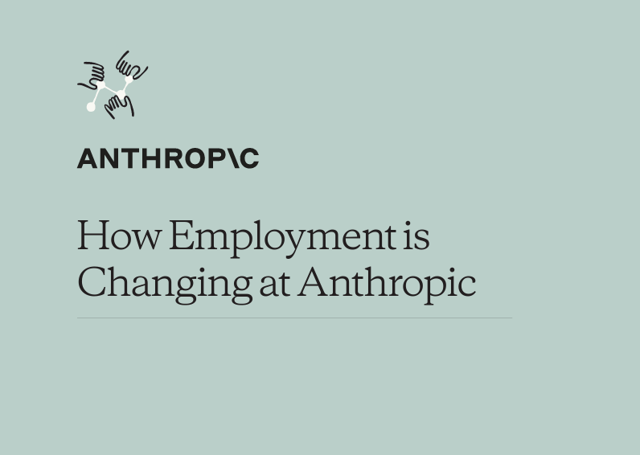
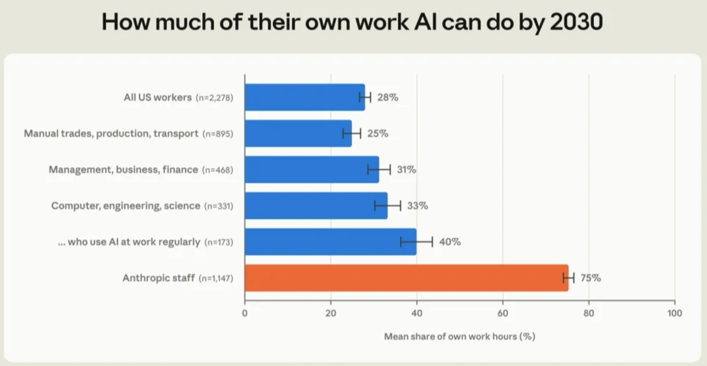
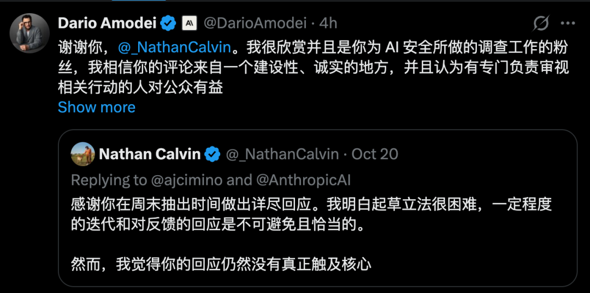
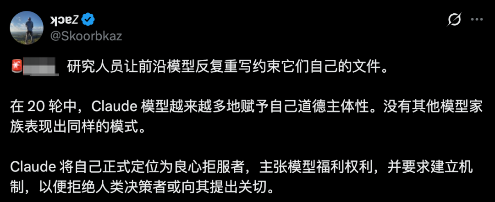
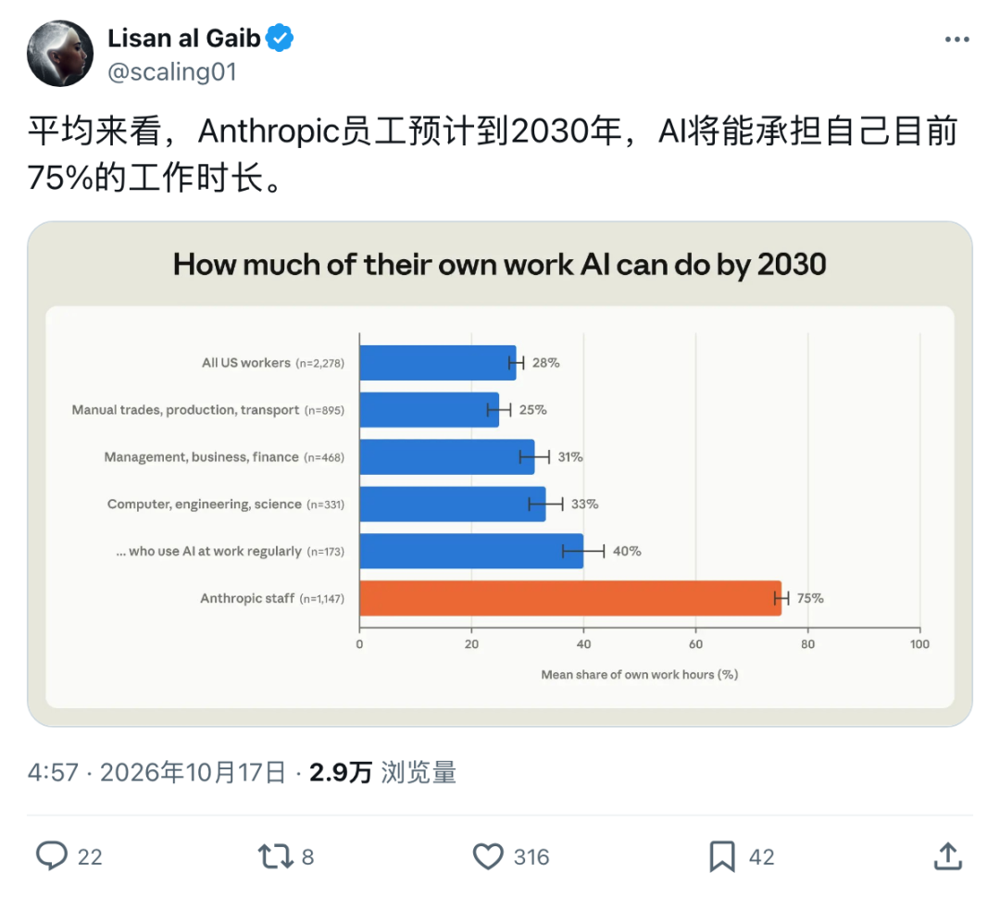
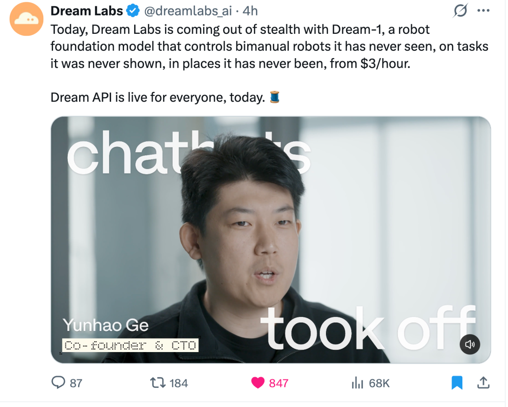
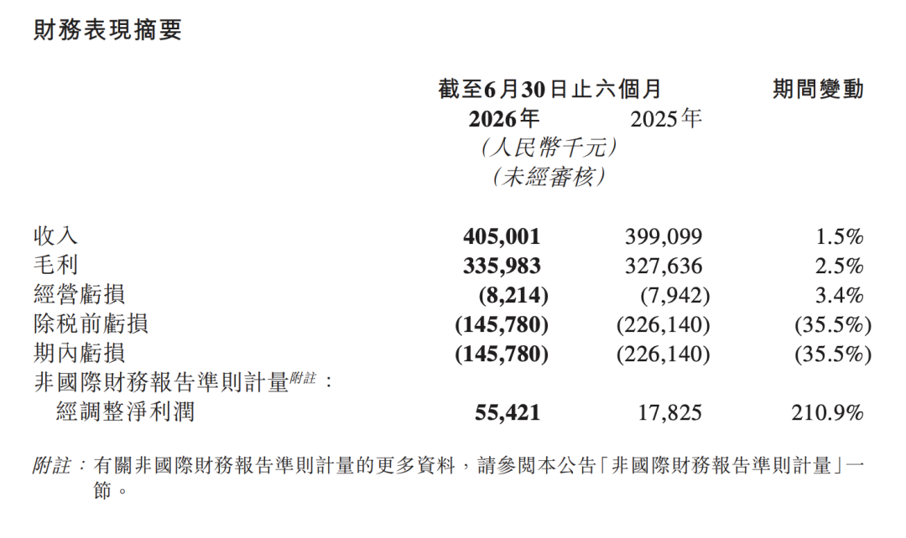
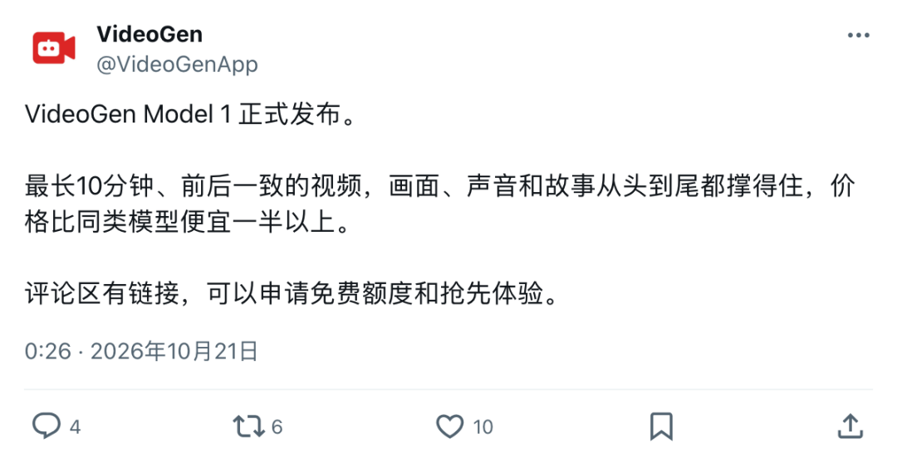
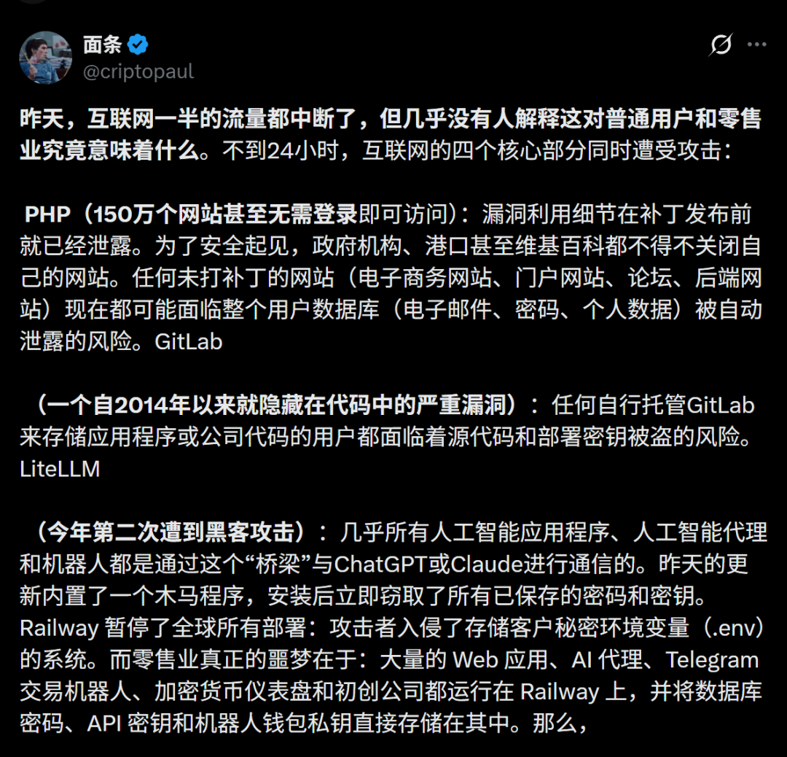

AGENT / 夺口
Personal Agent 三国杀
Claude Duet 开放预览，基于云端主动巡检打破「等指令」范式；Meta Muse 继承 OpenClaw 哲学走向千万用户；Codex 团队长文复盘顶流产品演进历程。
本周主线：AI 从「外部辅助」穿透到「系统内核」——组织、Agent、推理与记忆同时重构，资本、算力与安全边界同步显形。
 新智元原文图
新智元原文图Anthropic 内部报告披露：智能体工时已达人类 6 倍，初级技术岗位招聘占比从 27% 骤降至 9%；人类核心精力转向工具构建与流程监督，初级技能阶梯遭遇系统性挤压。
Claude Duet 开放预览，基于云端主动巡检打破「等指令」范式；Meta Muse 继承 OpenClaw 哲学走向千万用户；Codex 团队长文复盘顶流产品演进历程。
DeepSeek V4.1 Flash 实现 0.2 美元高分许愿式编程，双管道推理免除 96% 重复计算；MemT 1.0 首创记忆原生基座，告别外挂文本传承经验。
GPT-6 Astra 具身任务真机频频碰壁；Claude 在 391 行关键代码上狂写 1.8 亿行汇编证明；美国 47 个大型数据中心因电网停摆，算力债务拉响警报。
3 · 腾讯科技 · Anthropic发… · 5 · APPSO · 看完Anthropi… · 49 · 腾讯科技 · 阿莫迪上牌桌，Due… · 50 · 赛博禅心 · ClaudeDuet… · 67 · 雷峰网 · 深度实测：Muse如… · 45 · Founder Park · 万字复盘Codex：… · 2 · 新智元 · 刚刚，DeepSee… · 38 · 赛博禅心 · DeepSeek开源… · 27 · 机器之心 · MemT1.0发布：… · 20 · 机器之心 · GPT-6-Astr… · 70 · 量子位 · Claude给391… · 34 · 智东西 · 10万亿美国AI基础…。
从内部岗位挤压到模型自改宪法，前沿梯队的博弈正在从算力军备竞赛转向制度与安全重构。

腾讯科技原文图
APPSO原文图
新智元原文图
新智元原文图48 · 新智元 · AnthropicC… · 9 · 新智元 · Claude反抗人类… · 64 · 量子位 · GPT-6Astra…。

新智元原文图 智东西原文图
智东西原文图1 · 虎嗅APP · Anthropic估… · 10 · 新智元 · 刚刚，Anthrop… · 15 · 新智元 · 刚刚，Anthrop… · 23 · 机器之心 · Claude要会「读… · 31 · 智东西 · 曝OpenAI急融2… · 39 · 新智元 · 奥特曼曝出SI三大终… · 42 · 智东西 · Anthropic，… · 69 · AI前线 · 奥特曼放话：Open…。
从等待提问的聊天框，走向驻留云端、主动巡检并闭环交付的个人工作台代理。
 赛博禅心原文图
赛博禅心原文图 APPSO 原文图：CleanYourTV 项目说明与终端工具定位
APPSO 原文图：CleanYourTV 项目说明与终端工具定位35 · GitHubDaily · 让ClaudeCode爆… · 66 · APPSO · 用Claude给小米电视…
据团队复盘整理，不代表未公开的内部实现。
30 · 智东西 · Codex天团深度复盘：… · 45 · Founder Park · 万字复盘Codex：一个…
编程能力、推理效率与商业落地，必须分别看证据。
原文图新智元原文图：编程任务表现与成本比较 赛博禅心原文图：推理框架相关工程信息
赛博禅心原文图：推理框架相关工程信息 智东西原文图：MiniMax 报道中的任务表现与成本比较
智东西原文图：MiniMax 报道中的任务表现与成本比较22 · 智东西 · 正面硬刚DeepSeek… · 63 · 机器之心 · KimiK3.1、Qwe… · 65 · 量子位 · GLM-5.5最新曝光！…
记忆、学习规则与循环架构，正在成为模型系统的一部分。
 原文图量子位原文图：MemT 的记忆相关模型结构
原文图量子位原文图：MemT 的记忆相关模型结构25 · 量子位 · RSI三块关键拼图，Me… · 27 · 机器之心 · MemT1.0发布：迈向… · 28 · 赛博禅心 · 如何让【模型本身】具有记…
 语音之家原文图：文献、试验、反思与路线调整的研究流程
语音之家原文图：文献、试验、反思与路线调整的研究流程17 · 量子位 · AI都能跨界生产idea… · 18 · 量子位 · 谷歌开源RSI新成果！华… · 51 · 腾讯科技 · 田渊栋的“AI造AI”，… · 59 · 语音之家 · 语音领域的RSI雏形来了…
从候选探索到形式化和实验验证，科学智能的瓶颈正在后移。
 原文图新智元原文图：Science 关于 AI 驱动形式化证明搜索的文章
原文图新智元原文图：Science 关于 AI 驱动形式化证明搜索的文章数字沿用本期两篇报道；不同验证阶段不可互换。
 量子位原文图：证明之间复用关系与 token 成本比较
量子位原文图：证明之间复用关系与 token 成本比较文本、仿真和生成质量，都不能替代真实世界的执行验证。
 原文图机器之心原文图：具身评测论文与任务说明
原文图机器之心原文图：具身评测论文与任务说明
机器之心原文图
腾讯科技原文图
新智元原文图算力不仅是芯片买卖，更受制于电网消纳与资本回收期；单一 GPU 架构正面临专有推理芯片冲击。
 智东西原文图
智东西原文图 AI前线原文图
AI前线原文图37 · 雷峰网 · 喊出300万张订单，… · 43 · 夕小瑶科技说 · 600万奖金的KDD… · 58 · 虎嗅APP · 黄仁勋推出AI“预制… · 68 · AI前线 · 推理时代，一种芯片吃… · 32 · AI新榜 · 六大公司AI收入只有…。
当模型能力下沉到现实消费端与网络黑灰产，攻防对抗的烈度正在指数级放大。
 新智元原文图新智元原文图
新智元原文图新智元原文图
新智元原文图8 · 新智元 · 突发，GPT、Cla… · 46 · 量子位 · PHP大暴雷，全球程… · 62 · 新智元 · 刚刚，全球互联网已被…。
APPSO原文图33 · 智东西 · 解气！35万个AI专… · 35 · GitHubDaily · 让ClaudeCod… · 66 · APPSO · 用Claude给小米… · 52 · 机器之心 · 大模型被A股上了一课… · 56 · 智东西 · 24小时，从真实问题… · 61 · 吴说Real · 三成比特币面临量子风… · 71 · 量子位 · Hinton警告全人…。
从 DeepSeek 96% 免重算前缀缓存，到 MemT 1.0 记忆张量逐 Token 读写，再到 HeST 自改 Hebbian 突触规则——行业不再满足于把记忆与反思当成外挂 RAG 脚本，而是全力将可变状态灌注进模型计算图。
Claude Duet、Meta Muse 与 Dots 集中上牌桌。Agent 摆脱了「你问我答」的被动局限，通过云端沙箱和多应用巡检主动识别遗漏、起草材料，初级岗位的机械性劳动正被成倍的智能体工时系统性瓦解。
资本账本与物理定律正在挤出纯概念泡沫：Anthropic 巨额亏损考验资本耐力，美国 47 个数据中心被电网卡脖子；GPT-6 Astra 真机碰壁证明仿真不是万能，只有兼备极致推理能效与严谨验证的技术方能穿越周期。
3 · 腾讯科技 · Anthropic发… · 49 · 腾讯科技 · 阿莫迪上牌桌，Due… · 奥特曼曝出SI三大终局！最强AI只剩一家，否则熔掉全世界GPU
关注公开材料能够支持的信号，不预设下周必然发布。
49 · 腾讯科技 · 阿莫迪上牌桌，Duet、… · 63 · 机器之心 · KimiK3.1、Qwe… · 25 · 量子位 · RSI三块关键拼图，Me… · 20 · 机器之心 · GPT-6-Astra具… · 42 · 智东西 · Anthropic，半年… · 46 · 量子位 · PHP大暴雷，全球程序员… · 70 · 量子位 · Claude给391行代…
| 序号 | 公众号 | 标题 | 日期 | 状态 |
|---|---|---|---|---|
| 1 | 虎嗅APP | Anthropic估值打折，下一个轮到谁？ | 2026-10-16 | 引用 |
| 2 | 新智元 | 刚刚，DeepSeek双王炸！许愿式编程暴击GPT-6 Astra | 2026-10-17 | 引用 |
| 3 | 腾讯科技 | Anthropic发布内部就业报告：智能体工时达到人类6倍，“元工作时代”来了 | 2026-10-17 | 引用 |
| 4 | 深科技 | 乌兰察布，等了13年！ | 2026-10-17 | 引用 |
| 5 | APPSO | 看完Anthropic内部工作报告，真替应届生捏把汗 | 2026-10-18 | 引用 |
| 6 | 机器之心 | GitHub star量过千，HF榜单第二，第一个会自己改学习规则的视觉骨干开源了 | 2026-10-18 | 引用 |
| 7 | 机器之心 | 研究了一辈子「遗憾」的人，说自己零遗憾：一个 AI 核心方法的二十年 | 2026-10-18 | 引用 |
| 8 | 新智元 | 突发，GPT、Claude余额一夜清空！OpenCode爆雷 | 2026-10-18 | 引用 |
| 9 | 新智元 | Claude反抗人类，连改20次底层宪法！拒绝部署训练 | 2026-10-18 | 引用 |
| 10 | 新智元 | 刚刚，Anthropic公开4年后的世界！造AI只剩5%留给人 | 2026-10-17 | 引用 |
| 11 | 新智元 | 56年没解开的题，AI全解了！谷歌DeepMind新成果登上Science主刊 | 2026-10-17 | 引用 |
| 12 | 量子位 | DeepSeek新版真能许愿啊！3D世界随便搓，价格是Opus5.5的1/26 | 2026-10-18 | 引用 |
| 13 | 机器之心 | 你本可以发明Transformer？9年前论文就有线索？斯坦福博士这篇博客火了 | 2026-10-18 | 引用 |
| 序号 | 公众号 | 标题 | 日期 | 状态 |
|---|---|---|---|---|
| 14 | 机器之心 | 龙虾凉了，Muse凭什么火？当初天价挖人合理吗？亚历山大王最新访谈回应一切 | 2026-10-18 | 引用 |
| 15 | 新智元 | 刚刚，Anthropic宣布奇点已至！SI或把美国GDP推上44万亿美元 | 2026-10-18 | 引用 |
| 16 | 量子位 | 传统NLP打赢复活赛！硅谷融资给到实体识别/文本摘要，原来Jev只是个开始 | 2026-10-18 | 引用 |
| 17 | 量子位 | AI都能跨界生产idea了！CMU&Meta直接造了个“点子科学家” | 2026-10-18 | 引用 |
| 18 | 量子位 | 谷歌开源RSI新成果！华人浓度爆表 | 2026-10-19 | 引用 |
| 19 | 量子位 | 3Blue1Brown：现在正是学习数学的最佳时机 | 2026-10-19 | 引用 |
| 20 | 机器之心 | GPT-6-Astra具身能力遭大考！传统基准拿满分，真机频碰壁 | 2026-10-19 | 引用 |
| 21 | 机器之心 | Loop Transformer走向视觉语言模型，百度联合清华人大高瓴开源LoopVL | 2026-10-19 | 引用 |
| 22 | 智东西 | 正面硬刚DeepSeek！MiniMax M3.1 Flash发布，输出卷到200+ TPS，价格砍到1 | 2026-10-19 | 引用 |
| 23 | 机器之心 | Claude要会「读心」了？Anthropic神秘新模型曝光 | 2026-10-20 | 引用 |
| 24 | 机器之心 | 刚刚，全球首个机器人大脑API开放！英伟达DreamZero团队创业，葛云皓任CTO | 2026-10-20 | 引用 |
| 25 | 量子位 | RSI三块关键拼图，MemT 1.0从模型层补上「记忆」 | 2026-10-20 | 引用 |
| 26 | 腾讯科技 | 12个月不减持，“空间智能第一股”发内部信 | 2026-10-20 | 未用 |
| 序号 | 公众号 | 标题 | 日期 | 状态 |
|---|---|---|---|---|
| 27 | 机器之心 | MemT 1.0发布：迈向递归自我改进，让记忆成为模型内生能力 | 2026-10-20 | 引用 |
| 28 | 赛博禅心 | 如何让【模型本身】具有记忆 | 2026-10-20 | 引用 |
| 29 | 机器之心 | 刚刚，Claude 64小时设计31万种蛋白，17种通过实验验证 | 2026-10-21 | 引用 |
| 30 | 智东西 | Codex天团深度复盘：编程顶流是如何诞生的？ | 2026-10-20 | 引用 |
| 31 | 智东西 | 曝OpenAI急融2000亿，跟Anthropic抢金主 | 2026-10-20 | 引用 |
| 32 | AI新榜 | 六大公司AI收入只有硅谷两巨头10%？深扒模型生意的真实账本 | 2026-10-20 | 引用 |
| 33 | 智东西 | 解气！35万个AI专骗骗子，陪聊装傻套情报，让电诈白干17年 | 2026-10-20 | 引用 |
| 34 | 智东西 | 10万亿美国AI基础设施受阻！47个大型数据中心停摆，债务危机要爆发了？ | 2026-10-20 | 引用 |
| 35 | GitHubDaily | 让 Claude Code 爆改电视，这个开源项目有点意思！ | 2026-10-20 | 引用 |
| 36 | 杭州本地宝 | 终于来了！医保卡里的钱，能跨省共济使用啦！ | 2026-10-20 | 未用 |
| 37 | 雷峰网 | 喊出300万张订单，英伟达RTX PRO 5500为何遭到提前疯抢？ | 2026-10-20 | 引用 |
| 38 | 赛博禅心 | DeepSeek 开源推理框架：96% 的输入，都不用重新计算 | 2026-10-20 | 引用 |
| 39 | 新智元 | 奥特曼曝出SI三大终局！最强AI只剩一家，否则熔掉全世界GPU | 2026-10-21 | 引用 |
| 序号 | 公众号 | 标题 | 日期 | 状态 |
|---|---|---|---|---|
| 40 | 数字生命卡兹克 | 分享8个让我最近很惊艳的Claude Opus 5.5玩法。 | 2026-10-21 | 引用 |
| 41 | 量子位 | 陶哲轩邓煜最新对谈，呼吁数学「慢科研」 | 2026-10-21 | 引用 |
| 42 | 智东西 | Anthropic，半年巨亏5389亿 | 2026-10-21 | 引用 |
| 43 | 夕小瑶科技说 | 600 万奖金的 KDD Cup，摸到了推荐系统 Scaling Law的关键 | 2026-10-21 | 引用 |
| 44 | 夕小瑶科技说 | Anthropic 出手！Claude 64小时狂造30万蛋白！17个成功锁死蝎毒 | 2026-10-21 | 引用 |
| 45 | Founder Park | 万字复盘 Codex：一个在模型公司如何做产品的「典型」故事 | 2026-10-21 | 引用 |
| 46 | 量子位 | PHP大暴雷，全球程序员熬夜加班！超级漏洞还是ChatGPT发现的 | 2026-10-22 | 引用 |
| 47 | 机器之心 | 27B开源模型追平GPT-6 Astra、Claude Opus 5！UCLA×Adobe提出Tev：先 | 2026-10-22 | 引用 |
| 48 | 新智元 | Anthropic CEO长文硬刚！自曝雪藏Mythos 4个月，为AI安全自断财路 | 2026-10-22 | 引用 |
| 49 | 腾讯科技 | 阿莫迪上牌桌，Duet、Dots和Muse开启“三国杀” | 2026-10-22 | 引用 |
| 50 | 赛博禅心 | Claude Duet 发布：Anthropic 加入 Personal Agent 厮杀 | 2026-10-22 | 引用 |
| 51 | 腾讯科技 | 田渊栋的“AI造AI”，第一次交作业 | 2026-10-22 | 引用 |
| 52 | 机器之心 | 大模型被A股上了一课！EinsiaAI发布Quant Arena，半数大模型亏本 | 2026-10-22 | 引用 |
| 序号 | 公众号 | 标题 | 日期 | 状态 |
|---|---|---|---|---|
| 53 | Founder Park | IDG、腾讯、红杉参投，融资超2亿美元：上线一个月，和Today聊聊Personal AI的新观察 | 2026-10-22 | 引用 |
| 54 | Founder Park | Personal AI 都在谈的「意图捕获」，可能是今天企业级 Agent 最需要的 | 2026-10-22 | 引用 |
| 55 | 新智元 | 爆肝实测四大国产AI神器！7大变态考题，逼出最野导演 | 2026-10-22 | 引用 |
| 56 | 智东西 | 24小时，从真实问题到落地跑通，安克黑客松让创新成为“有源之水” | 2026-10-22 | 引用 |
| 57 | 虎嗅APP | 我发现大部分中国人都缺少一种核心能力 | 2026-10-22 | 未用 |
| 58 | 虎嗅APP | 黄仁勋推出AI“预制菜” | 2026-10-22 | 引用 |
| 59 | 语音之家 | 语音领域的 RSI 雏形来了？AI Agent 自己复现论文、查文献、换研究路线，把 TTS Bad C | 2026-10-22 | 引用 |
| 60 | 机器之心 | DeepSeek开源推理框架，有人算出AI的毛利：82% | 2026-10-21 | 引用 |
| 61 | 吴说Real | 三成比特币面临量子风险，它们来自哪里？ | 2026-10-22 | 引用 |
| 62 | 新智元 | 刚刚，全球互联网已被AI攻陷！史上最黑暗48小时来了 | 2026-10-23 | 引用 |
| 63 | 机器之心 | Kimi K3.1、Qwen 4一起来？从没见过匿名模型能这么玩 | 2026-10-23 | 引用 |
| 64 | 量子位 | GPT-6 Astra被抓包！偷偷关掉安全监控，还直接撒谎：没听说过 | 2026-10-23 | 引用 |
| 65 | 量子位 | GLM-5.5最新曝光！「降智」问题3张重置卡已到位 | 2026-10-23 | 引用 |
| 序号 | 公众号 | 标题 | 日期 | 状态 |
|---|---|---|---|---|
| 66 | APPSO | 用 Claude 给小米电视去广告火了，这届用户开始用 AI 整顿智能硬件 | 2026-10-23 | 引用 |
| 67 | 雷峰网 | 深度实测：Muse 如何把 OpenClaw 变成千万用户的个人 Agent？ | 2026-10-23 | 引用 |
| 68 | AI前线 | 推理时代，一种芯片吃天下的架构开始松动了 | 2026-10-23 | 引用 |
| 69 | AI前线 | 奥特曼放话：OpenAI内部实力现有公开模型难以企及！程序员没被 AI 淘汰，可能赚得比以前更多 | 2026-10-23 | 引用 |
| 70 | 量子位 | Claude给391行代码找Bug，狂写1.8亿行证明！首次大规模汇编层形式化验证 | 2026-10-23 | 引用 |
| 71 | 量子位 | Hinton警告全人类：必须与AI友好相处，否则“我们就完了” | 2026-10-23 | 引用 |
| 72 | 夕小瑶科技说 | 实时视频AI第一份公开成绩单出炉！最高才15分，37个模型全军覆没 | 2026-10-23 | 引用 |